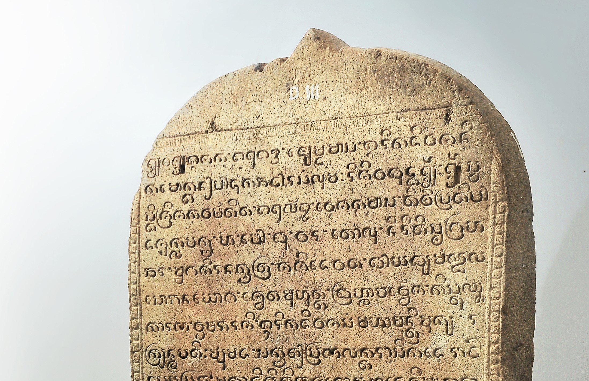
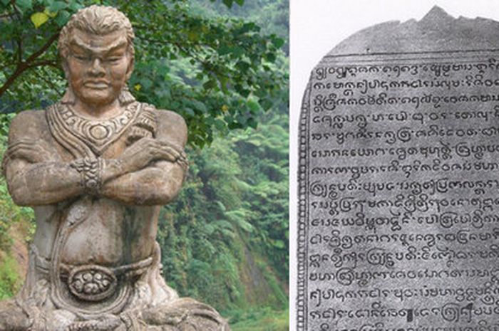

Prasati Gajah Mada
Prasasti Gajah Mada: Naskah Kebijaksanaan Hindu dalam Jejak Sejarah Nusantara
Prasasti Singhasari juga dikenal sebagai Prasasti Gajah Mada, adalah sebuah prasasti bertarikh tahun 1351 M, yang ditemukan di Singosari, Kabupaten Malang, Jawa Timur dan sekarang disimpan di Museum Gajah. Ditulis dengan Aksara Jawa.
Prasasti ini ditulis untuk mengenang pembangunan sebuah caitya atau sebuah bangunan/monumen untuk penghormatan para brahmana dan raja Krtanagara yang telah gugur saat terjadinya pemberontakan Jayakatwang di kerajaan Singhasari. Prasasti Gajah Mada dilaksanakan oleh Mahapatih Gajah Mada disebut juga sebagai mapatih jirṇnodhara. Paruh pertama prasasti ini merupakan pentarikhan tanggal yang sangat terperinci, termasuk pemaparan letak benda-benda angkasa. Paruh kedua mengemukakan maksud prasasti ini, yaitu sebagai pariwara pembangunan sebuah caitya.
Prasasti Gajah Mada ditemukan di tahun 1904 oleh penduduk setempat di dalam sebuah sebuah kolam di samping langgar milik seorang pemuka agama Islam, di sebelah utara Candi Singosari, Malang, Jawa Timur. Prasasti ini dinamakan prasasti Gajah Mada karena menyebutkan seorang tokoh, yaitu pu Mada yang memerintahkan pengeluaran prasasti. Prasasti Gajah Mada memiliki 17 baris tulisan hanya pada sisi depan (recto). Aksara dan bahasa yang digunakan adalah Jawa Kuna. Bentuk aksara prasasti Gajah Mada ini lazim digunakan pada prasasti-prasasti yang berasal dari abad ke-13-14 Masehi.
Desain yang Unik:
- Desain unik prasasti ini mencerminkan perpaduan seni dan makna mendalam. Dalam detil yang sangat terperinci, prasasti ini merinci pembangunan caitya sebagai penghormatan terhadap brahmana dan raja Krtanagara yang gugur selama pemberontakan Jayakatwang di Kerajaan Singhasari. Mahapatih Gajah Mada, yang memimpin penyelenggaraan prasasti, juga dikenal sebagai mapatih jirṇnodhara.
- Bagian pertama prasasti mengungkapkan penanggalan yang teliti, termasuk penjelasan tentang posisi benda-benda angkasa. Sementara bagian kedua menjelaskan tujuan prasasti sebagai pariwara pembangunan caitya yang megah. Namun, keistimewaan prasasti ini tidak hanya terletak pada narasi sejarahnya. Desainnya yang unik menciptakan sebuah karya seni yang memikat, menambah kekayaan jejak sejarah kebijaksanaan Hindu di Nusantara.
- Arsitektur huruf Aksara Jawa yang indah dan ornamen-ornamen khas menonjolkan keahlian tangan para pengrajin pada masa itu. Prasasti Gajah Mada bukan hanya sebuah petunjuk sejarah, melainkan juga peninggalan artistik yang menampilkan keindahan dan kompleksitas budaya Hindu pada masa itu. Dengan desain yang unik, prasasti ini tidak hanya berbicara tentang masa lalu, tetapi juga memancarkan keanggunan estetika yang masih dapat kita nikmati hingga hari ini.
Foto Prasati Gajah Mada

Foto 1
Foto 2
Dengan demikian, Prasasti Gajah Mada, atau yang lebih dikenal sebagai Prasasti Singhasari, menceritakan lebih dari sekadar sejarah. Ia menjadi jendela yang membuka kekayaan kebijaksanaan Hindu di Nusantara, terlukis melalui naskah dan desain uniknya. Dengan keindahan estetika dan makna mendalam, prasasti ini tak hanya menjadi saksi bisu pemberontakan Jayakatwang pada tahun 1351 M, tetapi juga membangkitkan keagungan peradaban Hindu yang tetap hidup hingga hari ini. Prasasti ini bukan sekadar batu bersurat, melainkan warisan berharga yang memberikan kilasan menarik tentang kearifan dan kemegahan masa lalu.
sumber : https://id.wikipedia.org/wiki/Prasasti_Singhasari_1351